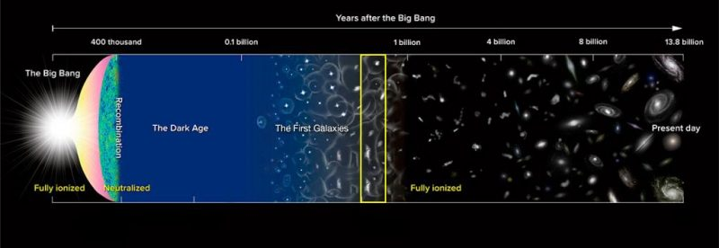
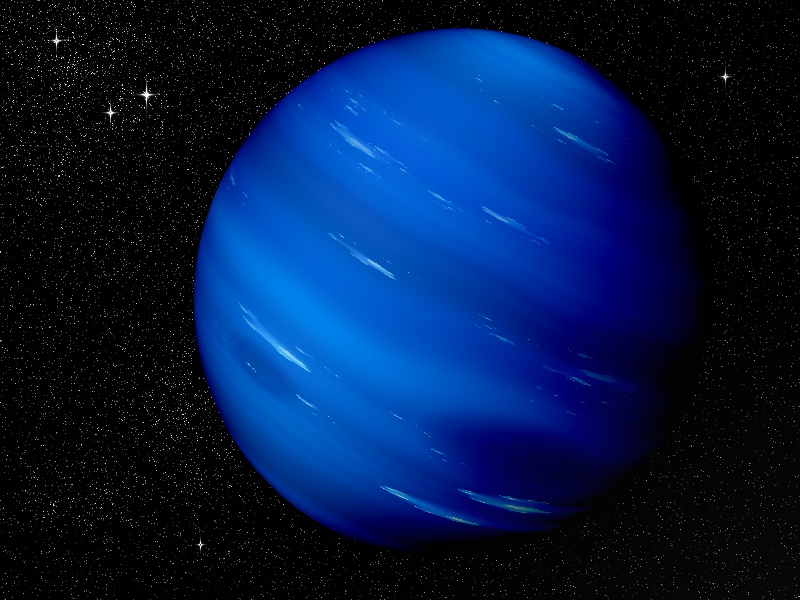
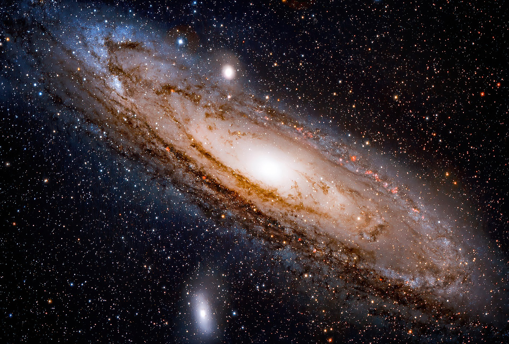

WELCOME TO COSMOS
Guided tour of the cosmos
By the Department of Management Science and Technology of the Athens University of Economics and Business.
- About the term Cosmos
- Difference between Cosmos and Universe
- Origins of the Universe
- Religious Cosmology
- Flat-Earth Theory
- Universe Facts
- The Cosmic Table
- Flat-Earth Theory
- Historic Milestones
- Afghanistan
- Albania
- Algeria
- Andorra
- Angola
- Antigua and Barbuda
- Argentina
- Armenia
- Australia
- Austria
- Azerbaijan
- Bahamas
- Bahrain
- Bangladesh
- Barbados
- Belarus
- Belgium
- Belize
- Brazil
- Bulgaria
- Burkina Faso
- Cameroon
- Canada
- Chile
- China
- Colombia
- Cyprus
- Egypt
- England
- France
- Germany
- Ghana
- Greece
- Ireland
- Israel
- Italy
- Japan
- Lithuania
- Mexico
- Norway
- Philippines
- Romania
- Russia
- Scotland
- Slovakia
- Spain
- Switzerland
- Ukraine
- United Arab Emirates
- United States
- Uruguay
Cosmos
Continents
Countries
Planets
Dwarf Planets
Earth-like Planets
Galaxies
Stars
Oceans
Cosmos Quotes
Zodiac
Frequent questions
Memes
Cosmos
About the term Cosmos
- According to Cambridge dictionary, the cosmos is the universe considered as a system with an order and pattern.
Source cambridge.org
- The philosopher Pythagoras first used the term kosmos (Ancient Greek: κόσμος, Latinized kósmos) for the order of the universe. The cosmos is another name for the Universe. The cosmos, and our understanding of the reasons for its existence and significance, are studied in cosmology – a broad discipline covering scientific, religious or philosophical aspects of the cosmos and its nature. Religious and philosophical approaches may include the cosmos among spiritual entities or other matters deemed to exist outside our physical universe.
Source wikipedia
Difference between Cosmos and Universe
It is common that the words cosmos and universe are used synonymously as they refer to the same concept which is the world or nature. However, there is difference between the terms. Universe seems to have either a narrower or smaller scope than cosmos. But, cosmos signifies a larger and more complex system.
Source Difference between Cosmos and Universe
Origins of the Universe
The most well-supported idea for the creation of our universe revolves around an event known as the big bang. This theory arose from the discovery that other galaxies are rapidly moving away from our own in all directions, as if driven by a powerful old explosive force.
In the 1920s, a Belgian priest called Georges Lemaître proposed the big bang theory, claiming that the cosmos began with a single primordial atom. The concept was bolstered by Edwin Hubble's discoveries that galaxies are rushing away from us in all directions, as well as Arno Penzias and Robert Wilson's discovery of cosmic microwave radiation in the 1960s, which they interpreted as echoes of the big bang.
The pace of the big bang has been clarified due to further research. Here's the theory: The cosmos was exceedingly compressed in the first 10^-43 seconds of its existence, less than a million billion billionth the size of a single atom. The four fundamental forces—gravity, electromagnetism, and the strong and weak nuclear forces—are considered to have been forged into a single force in such an incomprehensibly dense, energetic state, but our present theories haven't yet figured out how such a single, unified force would work. We'd need to understand how gravity works on a subatomic scale to pull this off, something we currently can't do.
The extremely close quarters are also believed to have allowed the universe's earliest particles to mix, blend, and settle into approximately the same temperature. Then, in a fraction of a second, all that matter and energy spread outward more or less uniformly, with minor differences given by quantum-scale fluctuations. Inflation, a hypothesis of rapid expansion, could explain why the universe's temperature and matter distribution are so uniform.
The cosmos continued to grow after inflation, although at a considerably slower rate. It's still a mystery what fueled inflation.
Video Origins of the Universe 101 | National Geographic
Source National Geographic
Religious Cosmology
Religious Cosmology is an explanation of the origin, evolution, and eventual fate of the universe from a religious perspective. There are various traditions in religion or religious mythology asserting how and why everything is the way it is and the significance of it all.
- Catholic Christians believe God is an omnipotent and transcendent creator. Their beliefs are based on the teachings of St Augustine (ex nihilo) and the book of Genesis. They believe that the creation story is not meant to be taken literally. Catholics read the stories of creation in a symbolic way, believing that they reveal some important things about the nature of the world and humanity. Pope John Paul II stated that Catholic belief and science are compatible. The theory of evolution can be accepted as part of God’s plan for the universe.
- Some Christians take a fundamentalist approach. They believe that the account of creation as it appears in the Bible is an accurate account of what happened – this belief is known as creationism. They believe that the creation of the world and everything in it took place in six calendar days, exactly as the book of Genesis says. This stems from the view that the Bible is the direct word of God, which is never mistaken.
- According to the Jewish beliefs, God is the creator and source of all life. This teaching comes from the book of Genesis, which is the first book of the Torah (Jewish written law). Most Orthodox Jews accept the Genesis accounts of creation as the literal world of God, as was revealed to Moses on Mt Sinai. They celebrate the creation of the world weekly by observing the Sabbath and they celebrate creation through the festival of Rosh Hashanah.
Source Religious Cosmology, Origins of the Universe
Flat-Earth Theory
The flat Earth model is an archaic and scientifically disproven conception of Earth's shape as a plane or disk. Many ancient cultures subscribed to a flat Earth cosmography, including Greece until the classical period (323 BC), the Bronze Age and Iron Age civilizations of the Near East until the Hellenistic period (31 BC), and China until the 17th century.
Despite the scientific fact and obvious effects of Earth's sphericity, flat Earth conspiracy theories are espoused by modern flat Earth societies. It is obvious that Flat-Earth ideas are based on basic scientific misunderstandings that can be easily refuted.
Source Flat Earth, Fighting Flat-Earth theory
Universe Facts
- There are more stars in the universe than grains of sand on all the beaches on Earth. That’s at least a billion trillion!
- A black hole is created when big stars explode. Its gravitational force is so strong that nothing can escape from it – luckily the closest black hole is about 10,000 light-years from Earth.
- When venturing into space, astronauts wear spacesuits which have to be warmed, cooled, pressurised and supplied with fresh air. This takes six hours for them to put on!
- The universe has no centre and is constantly expanding (getting bigger) every second – making it impossible to reach the edge.
- The Earth is about 4.5 billion years old – but that’s only a third of the age of the universe – which is 13.5 billion years old!
- The Earth is tiny in comparison with the rest of the universe – it could fit into the sun 1.3 million times.
- The moon is the reason why we have tides and waves on Earth. Along with the sun, it moves billions of tonnes of water each day.
- A day on Mercury lasts longer than its year! Mercury moves around the sun faster than any other planet – making its year the equivalent of 88 Earth days. While a day on Mercury – the interval between one sunrise and the next – lasts 176 Earth days!
- In 2006, Pluto was reclassified as a ‘dwarf planet’ after 76 years classified as the outermost planet in our solar system since its discovery in 1930.
- Only about 4.9% of the mass-energy of the Universe is atoms: the kind of stuff you, me, the stars and galaxies are made of and, of that, only half has been spotted with telescopes. Thus, 95% of the Universe is invisible.
- There is no atmosphere in space, which means that sound has no medium or way to travel to be heard. Astronauts use radios to stay in communication while in space since radio waves can still be sent and received.
- Despite searches for intelligent signals, no sign of intelligent extraterrestrial life has been found. In fact, there is a good argument that if such life-forms exist out there, not only should we see signs of them but they should already have come here.
Source natgeokids, indiatoday, SkyatNightMagazine
The Cosmic Table
| Topic | First Appearance |
|---|---|
| Observable Universe | 0 sec. |
| Superclusters | 11,000,000,000 yr. |
| Clusters of Galaxies | 6,000,000,000 yr. |
| Galaxies | 700,000,000 yr. |
| Star Clusters | 500,000,000 yr. |
| Planetary Systems | 180,000,000 yr. |
| Stars | 180,000,000 yr. |
| Earth | 9,500,000,000 yr. |
Source The Cosmic Table
End of the Universe
Eventually, billions or even trillions of years from now, the universe is going to end. Astrophysicists don't know exactly how the universe will end, but they have some ideas.
The big rip
Not only is the universe expanding, its expanding equally in all directions. And because space is expanding, galaxies are getting farther apart. The space within each galaxy is expanding too, but right now, the galaxy's own gravity is strong enough to hold it together.
The big rip would start once the pull of the universe's expansion gets stronger than the gravity holding galaxies together. Galaxies would tear apart first, followed by smaller black holes, planets and stars.
Eventually space would start expanding faster than the speed of light, and become stronger than the forces holding atoms together and they'd break down into individual particles. The entire universe would become a void of single particles unconnected to anything around them, drifting aimlessly in a timeless universe.
The big crunch
This is the least terrifying end-of-universe scenario. If astrophysicists are wrong about dark energy and there's actually less of it than we think, or its grasp on matter decreases over time, gravity would eventually become the most powerful force in the universe.
If that happens, then after trillions of years, the rate that the universe expands would decrease and the universe would start to shrink. Galaxies would crash into each other and merge as the universe starts collapsing on itself.
A shrinking universe would drive temperatures higher. The cosmic background radiation would be so hot that it would cook stars from the outside in. The intense heat would rip atoms apart in the final minutes before the Big Crunch. Black holes would then swallow up everything since objects are packed so tightly into dense clumps.
The black holes would then converge into one mega black hole that contains the entirety of the universe. The Big Crunch moment would happen instantly as the black hole swallows itself.
Some scientists think the universe has bounced back and forth between expansion and contraction, so there's definite hope for a universe rebirth in this last scenario, though we won't be around to witness it.
The big freeze or heat death
In this end-of-the-universe scenario, matter would stay intact rather than getting torn apart, but would slowly decay into radiation as the universe expands.
Right now the universe is not uniform — it's speckled with clumps of matter and energy in the form of things like galaxies, stars, and black holes. But the expansion would stretch everything out until everything is evenly spread through the universe. When that happens, objects can gain or lose energy. The gas clouds that form stars would dissipate, black holes would evaporate and eventually even light particles would fizzle out. The universe would be completely snuffed out forever.
Source 3 ways the Universe might end
Historic Milestones

Source EarthSky
Continents
Africa
Population: 1,275,920,972 (2018)
Description
Africa is the world's second-largest and second-most populous continent, after Asia in both cases. At about 30.3 million km2 (11.7 million square miles) including adjacent islands, it covers 6% of Earth's total surface area and 20% of its land area. With 1.3 billion people as of 2018, it accounts for about 16% of the world's human population. Africa's population is the youngest amongst all the continents; the median age in 2012 was 19.7, when the worldwide median age was 30.4. Despite a wide range of natural resources, Africa is the least wealthy continent per capita, in part due to geographic impediments, legacies of European colonization in Africa and the Cold War, predatory/neo-colonialistic activities by Western nations and China, and undemocratic rule and deleterious policies. Despite this low concentration of wealth, recent economic expansion and the large and young population make Africa an important economic market in the broader global context.
The continent is surrounded by the Mediterranean Sea to the north, the Isthmus of Suez and the Red Sea to the northeast, the Indian Ocean to the southeast and the Atlantic Ocean to the west. The continent includes Madagascar and various archipelagos. It contains 54 fully recognised sovereign states (countries), eight territories and two de facto independent states with limited or no recognition. Algeria is Africa's largest country by area, and Nigeria is its largest by population. African nations cooperate through the establishment of the African Union, which is headquartered in Addis Ababa.
Source wiki
Antarctica
Population: 1,000 to 5,000 (Seasonal)
Description
Antarctica is Earth's southernmost continent. Situated almost entirely south of the Antarctic Circle and surrounded by the Southern Ocean, it contains the geographic South Pole. Antarctica is the fifth-largest continent, being nearly twice the size of Australia, and has an area of 14,200,000 km2 (5,500,000 sq mi). Most of Antarctica is covered by ice, with an average thickness of 1.9 km (1.2 mi).
Antarctica is on average the coldest, driest, and windiest of the continents, and has the highest average elevation. It is mainly a polar desert, with annual precipitation of 200 mm (8 in) along the coast and far less inland. About 70% of the world's freshwater reserves are frozen there, which if melted would raise global sea levels by over 60 metres (200 ft). Antarctica holds the record for the lowest measured temperature on Earth, −89.2 °C (−128.6 °F). The average temperature for the third quarter (the coldest part of the year) is −63 °C (−81 °F). Native species of animals include mites, nematodes, penguins, seals and tardigrades. Vegetation consists of tundra.
Source wiki
Asia
Population: 4,560,667,108 (2018)
Description
Asia is Earth's largest and most populous continent, located primarily in the Eastern and Northern Hemispheres. It shares the continental landmass of Eurasia with the continent of Europe, and the continental landmass of Afro-Eurasia with Africa and Europe. Asia covers an area of 44,579,000 square kilometres (17,212,000 sq mi), about 30% of Earth's total land area and 8.7% of the Earth's total surface area. The continent, which has long been home to the majority of the human population, was the site of many of the first civilizations. Its 4.7 billion people constitutes roughly 60% of the world's population.
In general terms, Asia is bounded on the east by the Pacific Ocean, on the south by the Indian Ocean, and on the north by the Arctic Ocean. The border of Asia with Europe is a historical and cultural construct, as there is no clear physical and geographical separation between them. It is somewhat arbitrary and has moved since its first conception in classical antiquity. The division of Eurasia into two continents reflects East–West cultural, linguistic, and ethnic differences, some of which vary on a spectrum rather than with a sharp dividing line. The most commonly accepted boundaries place Asia to the east of the Suez Canal separating it from Africa; and to the east of the Turkish Straits, the Ural Mountains and Ural River, and to the south of the Caucasus Mountains and the Caspian and Black Seas, separating it from Europe.
Source wiki
Europe
Population: 746,419,440 (2018)
Description
Europe is a continent, also recognised as part of Eurasia, located entirely in the Northern Hemisphere and mostly in the Eastern Hemisphere. Comprising the westernmost peninsulas of the continental landmass of Eurasia, it shares the continental landmass of Afro-Eurasia with both Asia and Africa. It is bordered by the Arctic Ocean to the north, the Atlantic Ocean to the west, the Mediterranean Sea to the south and Asia to the east. Europe is commonly considered to be separated from Asia by the watershed of the Ural Mountains, the Ural River, the Caspian Sea, the Greater Caucasus, the Black Sea and the waterways of the Turkish Straits. Although much of this border is over land, Europe is almost always recognised as its own continent because of its great physical size and the weight of its history and traditions.
Europe covers about 10.18 million km2 (3.93 million sq mi), or 2% of the Earth's surface (6.8% of land area), making it the second-smallest continent (using the seven-continent model). Politically, Europe is divided into about fifty sovereign states, of which Russia is the largest and most populous, spanning 39% of the continent and comprising 15% of its population. Europe had a total population of about 746 million (about 10% of the world population) in 2018. The European climate is largely affected by warm Atlantic currents that temper winters and summers on much of the continent, even at latitudes along which the climate in Asia and North America is severe. Further from the sea, seasonal differences are more noticeable than close to the coast.
Source wiki
North America
Population: 592,296,233 (2021)
Description
North America is a continent in the Northern Hemisphere and almost entirely within the Western Hemisphere. It can also be described as the northern subcontinent of a single continent, America. It is bordered to the north by the Arctic Ocean, to the east by the Atlantic Ocean, to the southeast by South America and the Caribbean Sea, and to the west and south by the Pacific Ocean. Because it is on the North American Tectonic Plate, Greenland is included as part of North America geographically.
North America covers an area of about 24,709,000 square kilometers (9,540,000 square miles), about 16.5% of the Earth's land area and about 4.8% of its total surface. North America is the third-largest continent by area, following Asia and Africa, and the fourth by population after Asia, Africa, and Europe. In 2013, its population was estimated at nearly 579 million people in 23 independent states, or about 7.5% of the world's population.
Source wiki
Oceania
Population: 41,570,842 (2018)
Description
Oceania is a geographic region that includes Australasia, Melanesia, Micronesia and Polynesia. Spanning the Eastern and Western Hemispheres, Oceania has a land area of 8,525,989 square kilometres (3,291,903 sq mi) and a population of over 41 million. When compared with the continents, the region of Oceania is the smallest in land area and the second smallest in population after Antarctica.
Oceania has a diverse mix of economies from the highly developed and globally competitive financial markets of Australia, New Caledonia, New Zealand, French Polynesia and Hawaii, which rank high in quality of life and human development index, to the much less developed economies such as Papua New Guinea, Indonesian New Guinea, Kiribati, Vanuatu and Tuvalu, while also including medium-sized economies of Pacific islands such as Palau, Fiji and Tonga. The largest and most populous country in Oceania is Australia, and the largest city is Sydney.
Source wiki
South America
Population: 423,581,078 (2018)
Description
South America is a continent entirely in the Western Hemisphere and mostly in the Southern Hemisphere, with a relatively small portion in the Northern Hemisphere. It can also be described as the southern subregion of a single continent called America.
South America is bordered on the west by the Pacific Ocean and on the north and east by the Atlantic Ocean; North America and the Caribbean Sea lie to the northwest. The continent generally includes twelve sovereign states: Argentina, Bolivia, Brazil, Chile, Colombia, Ecuador, Guyana, Paraguay, Peru, Suriname, Uruguay, and Venezuela; two dependent territories: the Falkland Islands and South Georgia and the South Sandwich Islands; and one internal territory: French Guiana. In addition, the ABC islands of the Kingdom of the Netherlands, Ascension Island (dependency of Saint Helena, Ascension and Tristan da Cunha, a British Overseas Territory), Bouvet Island (dependency of Norway), Panama, and Trinidad and Tobago may also be considered parts of South America.
South America has an area of 17,840,000 square kilometers (6,890,000 sq mi). Its population as of 2018 has been estimated at more than 423 million. South America ranks fourth in area (after Asia, Africa, and North America) and fifth in population (after Asia, Africa, Europe, and North America). Brazil is by far the most populous South American country, with more than half of the continent's population, followed by Colombia, Argentina, Venezuela and Peru. In recent decades, Brazil has also generated half of the continent's GDP and has become the continent's first regional power.
Source wiki
Countries
Afghanistan

Capital: Kabul Official Language: Pashto, Dari Currency: Afghan afghani (AFN) Population: 38,928,346 (2020)
Albania

Capital: Tirana Official Language: Albanian Currency: Albanian lek (ALL) Population: 2,877,797 (2020)
Algeria

Capital: Algiers Official Language: Arabic and Tamazight Currency: Algerian dinar (DZD) Population: 43,851,044 (2020)
Andorra

Capital: Andorra la Vella Official Language: Catalan Currency: Euro (EUR) Population: 77,265 (2020)
Angola

Capital: Luanda Official Language: Portuguese Currency: Angolan kwanza (AOA) Population: 32,866,272 (2020)
Antigua and Barbuda

Capital: Saint John's Official Language: English Currency: Eastern Caribbean dollar (XCD) Population: 97,929 (2020)
Argentina

Capital: Buenos Aires Official Language: Spanish Currency: Argentine Peso (ARS) Population: 45,195,774 (2020)
Armenia

Capital: Yerevan Official Language: Armenian Currency: Dram (AMD) Population: 2,963,900 (2021)
Australia

Capital: Canberra Official Language: None at the federal level Currency: Australian dollar (AUD) Population: 23,401,892 (2016)
Austria

Capital: Vienna Official Language: German Currency: Euro (EUR) Population: 9,006,398 (2020)
Azerbaijan

Capital: Baku Official Language: Azerbaijani Currency: Azerbaijani manat (AZN) Population: 10,139,177 (2020)
Bahamas

Capital: Nassau Official Language: English Currency: Bahamian dollar (BSD) Population: 393,244 (2020)
Bahrain

Capital: Manama Official Language: Arabic Currency: Bahraini dinar (BHD) Population: 1,701,575 (2020)
Bangladesh

Capital: Dhaka Official Language: Bengali Currency: Bangladeshi taka (BDT) Population: 164,689,383 (2020)
Barbados

Capital: Bridgetown Official Language: English Currency: Barbados Dollar (BBD) Population: 287,375 (2020)
Belarus

Capital: Minsk Official Language: Belarusian, Russian Currency: Belarusian ruble (BYN) Population: 9,349,645 (2021)
Belgium

Capital: Brussels Official Language: Dutch, French, German Currency: Euro (EUR) Population: 11,492,641 (2020)
Belize

Capital: Belmopan Official Language: English Currency: Belize dollar (BZD) Population: 397,628 (2020)
Brazil

Capital: Brasilia Official Language: Portuguese Currency: Brazilian Real (BRL) Population: 212,559,417 (2020)
Bulgaria

Capital: Sofia Official Language: Bulgarian Currency: Lev (BGN) Population: 6,863,422 (2022)
Burkina Faso

Capital: Ouagadougou Official Language: French Currency: West African CFA franc (XOF) Population: 21,510,181 (2020)
Cameroon

Capital: Yaoundé Official Language: French, English Currency: Central African CFA franc (XAF) Population: 26,545,863 (2020)
Canada

Capital: Ottawa Official Language: French, English Currency: Canadian Dollar (CAD) Population: 37,742,154 (2020)
Chile

Capital: Santiago Official Language: Spanish Currency: Chilean peso (CLP) Population: 19,116,201 (2020)
China

Capital: Beijing Official Language: Mandarin Currency: Renminbi (Yuan) (CNY) Population: 1,439,323,776 (2020)
Colombia

Capital: Bogotá Official Language: Spanish Currency: Colombian peso (COP) Population: 50,372,424 (2020)
Cyprus

Capital: Nicosia Official Language: Greek, Turkish Currency: Euro (EUR) Population: 1,207,359 (2020)
For a special Mediterranean experience, Cyprus is the right destination. The beaches of Cyprus are the ones that will attract your interest the most.
Egypt

Capital: Cairo Official Language: Arabic Currency: Egyptian pound (EBP) Population: 102,334,404 (2020)
England

Capital: London Official Language: English Currency: British Pound Sterling (GBP) Population: 56,286,961 (2019)
England is the biggest of the four countries that are part of the United Kingdom.
France

Capital: Paris Official Language: French Currency: Euro (EUR) Population: 65,273,511 (2020)
Germany

Capital: Berlin Official Language: German Currency: Euro (EUR) Population: 83,783,942 (2020)
Ghana

Capital: Accra Official Language: English Currency: Cedi (GHS) Population: 31,072,940 (2020)
Greece

Capital: Athens Official Language: Greek Currency: Euro (EUR) Population: 10,423,054 (2020)
Ireland

Capital: Dublin Official Language: Irish, English Currency: Euro (EUR) Population: 5,035,283 (2020)
Israel

Capital: Jerusalem Official Language: Hebrew Currency: New Israeli Sheqel (ILS) Population: 8,655,535 (2020)
Italy

Capital: Rome Official Language: Italian Currency: Euro (EUR) Population: 60,461,826 (2020)
Japan

Capital: Tokyo Official Language: Japanese Currency: Yen (JPY) Population: 126,476,461 (2020)
Lithuania

Capital: Vilnius Official Language: Lithuanian Currency: Euro (EUR) Population: 2,722,289 (2020)
Mexico

Capital: Mexico City Official Language: None at federal level Currency: Mexican peso (MXN) Population: 126,014,024 (2020)
Norway

Capital: Oslo Official Language: Norwegian Currency: Norwegian krone (NOK) Population: 5,421,241 (2020)
Philippines

Capital: Manila Official Language: Filipino, English Currency: Philippine peso (PHP) Population: 109,035,343 (2020)
Romania

Capital: Bucharest Official Language: Romanian Currency: Romanian leu (RON) Population: 19,237,691 (2020)
Russia

Capital: Moscow Official Language: Russian Currency: Russian ruble (RUB) Population: 145,934,462 (2020)
Scotland

Capital: Edinburgh Official Language: English, Scottish Gaelic Currency: British Pound Sterling (GBP) Population: 5,466,000 (2020)
Slovakia

Capital: Bratislava Official Language: Slovak Currency: Euro (EUR) Population: 5,459,642 (2020)
Spain

Capital: Madrid Official Language: Spanish Currency: Euro (EUR) Population: 46,754,778 (2020)
Switzerland

Capital: Bern Official Language: German, French, Italian, Romansh Currency: Euro (EUR) Population: 8,654,622 (2020)
Switzerland is ideally for vacation. It has idyllic landscapes that range from snow-capped mountains and ice-cold mountain lakes to flower gardens and valleys. The country also combines cosmopolitan cities and picturesque villages. Source nationsonline
Ukraine

Capital: Kyiv Official Language: Ukrainian Currency: Hryvnia (UAH) Population: 43,733,762 (2020)
United Arab Emirates

Capital: Abu Dhabi Official Language: Arabic Currency: UAE Dirham (AED) Population: 9,890,402 (2020)
United States

Capital: Washington, D.C. Official Language: English Currency: US Dollar (USD) Population: 331,002,651 (2020)
Uruguay

Capital: Montevideo Official Language: Spanish Currency: Euro (EUR) Population: 1,207,359 (2020)
Planets
We still can not visit others planets but using the SpaceEngine (available on steam) you can discover much more about the universe.
Earth

owned by tonyrogers.com
Capital: N/A Official Language: N/A
Description
Earth is the third planet from the Sun and the only astronomical object known to harbor life. While large amounts of water can be found throughout the Solar System, only Earth sustains liquid surface water. About 71% of Earth's surface is made up of the ocean, dwarfing Earth's polar ice, lakes and rivers. The remaining 29% of Earth's surface is land, consisting of continents and islands. Earth's surface layer is formed of several slowly moving tectonic plates, interacting to produce mountain ranges, volcanoes and earthquakes. Earth's liquid outer core generates the magnetic field that shapes Earth's magnetosphere, deflecting destructive solar winds.
Earth's atmosphere consists mostly of nitrogen and oxygen. More solar energy is received by tropical regions than polar regions and is redistributed by atmospheric and ocean circulation. Water vapor is widely present in the atmosphere and forms clouds that cover most of the planet. Greenhouse gases in the atmosphere like carbon dioxide (CO2) trap a part of the energy from the Sun close to the surface. A region's climate is governed by latitude, but also by elevation and proximity to moderating oceans. Severe weather, such as tropical cyclones, thunderstorms, and heatwaves, occurs in most areas and greatly impacts life.
Earth is an ellipsoid with a circumference of about 40,000 km. It is the densest planet in the Solar System. Of the four rocky planets, it is the largest and most massive. Earth is about eight light minutes away from the Sun and orbits it, taking a year (about 365.25 days) to complete one revolution. Earth rotates around its own axis in a day. Earth's axis of rotation is tilted with respect to its orbital plane with the Sun, producing seasons. Earth is orbited by one permanent natural satellite, the Moon, which orbits Earth at 380,000 km (1.3 light seconds) and is roughly a quarter as wide as Earth. The Moon always faces the Earth with the same side through tidal locking and causes tides, stabilizes Earth's axis and gradually slows its rotation.
Earth formed over 4.5 billion years ago. During the first billion years of Earth's history, the ocean formed and then life developed within it. Life spread globally and began to affect Earth's atmosphere and surface, leading to Earth's Great Oxidation Event two billion years ago. Humans emerged 300,000 years ago, and have reached a population of almost 8 billion today. Humans depend on Earth's biosphere and natural resources for their survival, but have increasingly impacted Earth's environment. Today, humanity's impact on Earth's climate, soils, waters and ecosystems is unsustainable, threatening people's lives and causing widespread extinction of other life.
Source wiki
Video Earth 101 | National Geographic
Jupiter

owned by spaceexploration92.com
Capital: N/A Official Language: N/A
Description
Jupiter is the fifth planet from the Sun and the largest in the Solar System. It is a gas giant with a mass more than two and a half times that of all the other planets in the Solar System combined, but slightly less than one-thousandth the mass of the Sun. Jupiter is the third brightest natural object in the Earth's night sky after the Moon and Venus. People have been observing it since prehistoric times; it was named after the Roman god Jupiter, the king of the gods.
Jupiter is primarily composed of hydrogen, but helium constitutes one-quarter of its mass and one-tenth of its volume. It likely has a rocky core of heavier elements,[16] but, like the other giant planets, Jupiter lacks a well-defined solid surface. The ongoing contraction of its interior generates heat greater than the amount received from the Sun. Because of its rapid rotation, the planet's shape is an oblate spheroid; it has a slight but noticeable bulge around the equator. The outer atmosphere is visibly segregated into several bands at different latitudes, with turbulence and storms along their interacting boundaries. A prominent result of this is the Great Red Spot, a giant storm known to have existed since at least the 17th century when telescopes first saw it.
Surrounding Jupiter is a faint planetary ring system and a powerful magnetosphere. Jupiter's magnetic tail is nearly 800 million km (5.3 AU; 500 million mi) long, covering nearly the entire distance to Saturn's orbit. Jupiter has 80 known moons and possibly many more,[6] including the four large Galilean moons discovered by Galileo Galilei in 1610: Io, Europa, Ganymede, and Callisto. Io and Europa are about the size of Earth's Moon; Callisto is almost the size of the planet Mercury, and Ganymede is even larger.
Pioneer 10 was the first spacecraft to visit Jupiter, making its closest approach to the planet in December 1973.[17] Jupiter has since been explored on several occasions by robotic spacecraft, beginning with the Pioneer and Voyager flyby missions from 1973 to 1979, and later by the Galileo orbiter, which arrived at Jupiter in 1995.[18] In 2007, the New Horizons visited Jupiter using its gravity to increase its speed, bending its trajectory en route to Pluto. The latest probe to visit the planet, Juno, entered orbit around Jupiter in July 2016.[19][20] Future targets for exploration in the Jupiter system include the probable ice-covered liquid ocean of Europa.[21]
Source wiki
Video Jupiter 101 | National Geographic
Mars

owned by econotimes.com
Capital: N/A Official Language: N/A
Description
Mars is the fourth planet from the Sun and the second-smallest planet in the Solar System, being larger than only Mercury. In English, Mars carries the name of the Roman god of war and is often referred to as the "Red Planet".[17][18] The latter refers to the effect of the iron oxide prevalent on Mars's surface, which gives it a striking reddish appearance in the sky.[19] Mars is a terrestrial planet with a thin atmosphere, with surface features such as impact craters, valleys, dunes, and polar ice caps.
The days and seasons are comparable to those of Earth, because the rotation period as well as the tilt of the rotational axis relative to the ecliptic plane are similar. Mars is the site of Olympus Mons, the largest volcano and highest known mountain on any planet in the Solar System, and of Valles Marineris, one of the largest canyons in the Solar System. The smooth Borealis basin in the Northern Hemisphere covers 40% of the planet and may be a giant impact feature.[20] Mars has two moons, Phobos and Deimos, which are small and irregularly shaped.
Mars has been explored by several uncrewed spacecraft. Mariner 4 was the first spacecraft to visit Mars; launched by NASA on 28 November 1964, it made its closest approach to the planet on 15 July 1965. Mariner 4 detected the weak Martian radiation belt, measured at about 0.1% that of Earth, and captured the first images of another planet from deep space.[21] The latest spacecraft to successfully land on Mars are CNSA's Tianwen-1 lander and Zhurong rover, landed on 14 May 2021.[22] The Zhurong rover was successfully deployed on 22 May 2021, which makes China the second country to successfully deploy a rover on Mars, after the United States.[22]
Source wiki
Video Mars 101 | National Geographic
Mercury

owned by alearningfamily.com
Capital: N/A Official Language: N/A
Description
Mercury is the smallest planet in the Solar System and the closest to the Sun. Its orbit around the Sun takes 87.97 Earth days, the shortest of all the Sun's planets. It is named after the Roman god Mercurius (Mercury), god of commerce, messenger of the gods, and mediator between gods and mortals, corresponding to the Greek god Hermes (Ἑρμῆς). Like Venus, Mercury orbits the Sun within Earth's orbit as an inferior planet, and its apparent distance from the Sun as viewed from Earth never exceeds 28°. This proximity to the Sun means the planet can only be seen near the western horizon after sunset or the eastern horizon before sunrise, usually in twilight. At this time, it may appear as a bright star-like object, but is more difficult to observe than Venus. From Earth, the planet telescopically displays the complete range of phases, similar to Venus and the Moon, which recurs over its synodic period of approximately 116 days.
Mercury rotates in a way that is unique in the Solar System. It is tidally locked with the Sun in a 3:2 spin–orbit resonance,[17] meaning that relative to the fixed stars, it rotates on its axis exactly three times for every two revolutions it makes around the Sun.[a][18] As seen from the Sun, in a frame of reference that rotates with the orbital motion, it appears to rotate only once every two Mercurian years. An observer on Mercury would therefore see only one day every two Mercurian years.
Mercury's axis has the smallest tilt of any of the Solar System's planets (about 1⁄30 degree). Its orbital eccentricity is the largest of all known planets in the Solar System;[b] at perihelion, Mercury's distance from the Sun is only about two-thirds (or 66%) of its distance at aphelion. Mercury's surface appears heavily cratered and is similar in appearance to the Moon's, indicating that it has been geologically inactive for billions of years. Having almost no atmosphere to retain heat, it has surface temperatures that vary diurnally more than on any other planet in the Solar System, ranging from 100 K (−173 °C; −280 °F) at night to 700 K (427 °C; 800 °F) during the day across the equatorial regions.[19] The polar regions are constantly below 180 K (−93 °C; −136 °F). The planet has no known natural satellites.
Source wiki
Video Mercury 101 | National Geographic
Neptune

owned by p-gallery.net
Capital: N/A Official Language: N/A
Description
Neptune is the eighth and farthest-known Solar planet from the Sun. In the Solar System, it is the fourth-largest planet by diameter, the third-most-massive planet, and the densest giant planet. It is 17 times the mass of Earth, and slightly more massive than its near-twin Uranus. Neptune is denser and physically smaller than Uranus because its greater mass causes more gravitational compression of its atmosphere. It is referred to as one of the solar system's two ice giant planets (the other one being its near-twin Uranus).
Being composed primarily of gases and liquids, it has no well-defined "solid surface." The planet orbits the Sun once every 164.8 years at an average distance of 30.1 AU (4.5 billion km; 2.8 billion mi). It is named after the Roman god of the sea and has the astronomical symbol ♆, representing Neptune's trident.[d]
Neptune is not visible to the unaided eye and is the only planet in the Solar System found by mathematical prediction rather than by empirical observation. Unexpected changes in the orbit of Uranus led Alexis Bouvard to deduce that its orbit was subject to gravitational perturbation by an unknown planet. After Bouvard's death, the position of Neptune was predicted from his observations, independently, by John Couch Adams and Urbain Le Verrier. Neptune was subsequently observed with a telescope on 23 September 1846[1] by Johann Galle within a degree of the position predicted by Le Verrier. Its largest moon, Triton, was discovered shortly thereafter, though none of the planet's remaining 13 known moons were located telescopically until the 20th century. The planet's distance from Earth gives it a very small apparent size, making it challenging to study with Earth-based telescopes. Neptune was visited by Voyager 2, when it flew by the planet on 25 August 1989; Voyager 2 remains the only spacecraft to have visited Neptune.[17][18] The advent of the Hubble Space Telescope and large ground-based telescopes with adaptive optics has recently allowed for additional detailed observations from afar.
Source wiki
Video Neptune 101 | National Geographic
Saturn

owned by techexplorist.com
Capital: N/A Official Language: N/A
Description
Saturn is the sixth planet from the Sun and the second-largest in the Solar System, after Jupiter. It is a gas giant with an average radius of about nine and a half times that of Earth.[22][23] It only has one-eighth the average density of Earth; however, with its larger volume, Saturn is over 95 times more massive.[24][25][26]
Saturn's interior is most likely composed of a core of iron–nickel and rock (silicon and oxygen compounds). Its core is surrounded by a deep layer of metallic hydrogen, an intermediate layer of liquid hydrogen and liquid helium, and finally, a gaseous outer layer. Saturn has a pale yellow hue due to ammonia crystals in its upper atmosphere. An electrical current within the metallic hydrogen layer is thought to give rise to Saturn's planetary magnetic field, which is weaker than Earth's, but which has a magnetic moment 580 times that of Earth due to Saturn's larger size. Saturn's magnetic field strength is around one-twentieth of Jupiter's.[27] The outer atmosphere is generally bland and lacking in contrast, although long-lived features can appear. Wind speeds on Saturn can reach 1,800 km/h (1,100 mph; 500 m/s), higher than on Jupiter but not as high as on Neptune.[28]
The planet's most notable feature is its prominent ring system, which is composed mainly of ice particles, with a smaller amount of rocky debris and dust. At least 83 moons[29] are known to orbit Saturn, of which 53 are officially named; this does not include the hundreds of moonlets in its rings. Titan, Saturn's largest moon and the second largest in the Solar System, is larger than the planet Mercury, although less massive, and is the only moon in the Solar System to have a substantial atmosphere.[30]
Source wiki
Video Saturn 101 | National Geographic
Uranus

owned by zastavki.com
Capital: N/A Official Language: N/A
Description
Uranus is the seventh planet from the Sun. Its name is a reference to the Greek god of the sky, Uranus, who, according to Greek mythology, was the great-grandfather of Ares (Mars), grandfather of Zeus (Jupiter) and father of Cronus (Saturn). It has the third-largest planetary radius and fourth-largest planetary mass in the Solar System. Uranus is similar in composition to Neptune, and both have bulk chemical compositions which differ from that of the larger gas giants Jupiter and Saturn. For this reason, scientists often classify Uranus and Neptune as "ice giants" to distinguish them from the other giant planets.
As with gas giants, ice giants also lack a well defined "solid surface." Uranus's atmosphere is similar to Jupiter's and Saturn's in its primary composition of hydrogen and helium, but it contains more "ices" such as water, ammonia, and methane, along with traces of other hydrocarbons.[17] It has the coldest planetary atmosphere in the Solar System, with a minimum temperature of 49 K (−224 °C; −371 °F), and has a complex, layered cloud structure with water thought to make up the lowest clouds and methane the uppermost layer of clouds.[17] The interior of Uranus is mainly composed of ices and rock.[16]
Like the other giant planets, Uranus has a ring system, a magnetosphere, and numerous moons. The Uranian system has a unique configuration because its axis of rotation is tilted sideways, nearly into the plane of its solar orbit. Its north and south poles, therefore, lie where most other planets have their equators.[22] In 1986, images from Voyager 2 showed Uranus as an almost featureless planet in visible light, without the cloud bands or storms associated with the other giant planets.[22] Voyager 2 remains the only spacecraft to visit the planet.[23] Observations from Earth have shown seasonal change and increased weather activity as Uranus approached its equinox in 2007. Wind speeds can reach 250 metres per second (900 km/h; 560 mph).[24]
Source wiki
Video Uranus 101 | National Geographic
Venus

owned by scitechdaily.com
Capital: N/A Official Language: N/A
Description
Venus is the second planet from the Sun. It is named after the Roman goddess of love and beauty. As the brightest natural object in Earth's night sky after the Moon, Venus can cast shadows and can be visible to the naked eye in broad daylight.[18][19] Venus's orbit is smaller than that of Earth, but its maximal elongation is 47°, and thus it can be seen not only near the Sun in the morning or evening, but also a couple of hours before or after sunrise or sunset, depending on the observer's latitude and on the positions of Venus and the Sun. Most of the time, it can be seen either in the morning or in the evening. At some times, it may even be seen a while in a completely dark sky. Venus orbits the Sun every 224.7 Earth days.[20] It has a synodic day length of 117 Earth days and a sidereal rotation period of 243 Earth days. As a consequence, it takes longer to rotate about its axis than any other planet in the Solar System, and does so in the opposite direction to all but Uranus. This means that the Sun rises from its western horizon and sets in its east.[21] Venus does not have any moons, a distinction it shares only with Mercury among the planets in the Solar System.[22]
Venus is a terrestrial planet and is sometimes called Earth's "sister planet" because of their similar size, mass, proximity to the Sun, and bulk composition. It is radically different from Earth in other respects. It has the densest atmosphere of the four terrestrial planets, consisting of more than 96% carbon dioxide. The atmospheric pressure at the planet's surface is about 92 times the sea level pressure of Earth, or roughly the pressure at 900 m (3,000 ft) underwater on Earth. Even though Mercury is closer to the Sun, Venus has the hottest surface of any planet in the Solar System, with a mean temperature of 737 K (464 °C; 867 °F). Venus is shrouded by an opaque layer of highly reflective clouds of sulfuric acid, preventing its surface from being seen from space in light. It may have had water oceans in the past,[23][24] but these would have vaporized as the temperature rose under a runaway greenhouse effect.[25] The water has probably photodissociated, and the free hydrogen has been swept into interplanetary space by the solar wind because of the lack of a planetary magnetic field.[26]
As one of the brightest objects in the sky, Venus has been a major fixture in human culture for as long as records have existed. It has been made sacred to gods of many cultures, and has been a prime inspiration for writers and poets as the "morning star" and "evening star". Venus was the first planet to have its motions plotted across the sky, as early as the second millennium BC.[27]
Source wiki
Video Venus 101 | National Geographic
Dwarf Planets
According to the International Astronomical Union, a dwarf planet is a celestial body that -orbits the sun, has enough mass to assume a nearly round shape, has not cleared the neighborhood around its orbit and is not a moon.
Pluto

owned by refinery29.com
Capital: N/A Official Language: N/A
Description
Pluto (minor-planet designation: 134340 Pluto) is a dwarf planet in the Kuiper belt, a ring of bodies beyond the orbit of Neptune. It was the first object to be discovered in the Kuiper belt, and remains the largest known body in that area. After Pluto was discovered in 1930, it was declared to be the ninth planet from the Sun. Beginning in the 1990s, its status as a planet was questioned following the discovery of several objects of similar size in the Kuiper belt and the scattered disc, including the dwarf planet Eris. This led the International Astronomical Union (IAU) in 2006 to formally define the term planet—excluding Pluto and reclassifying it as a dwarf planet.
Pluto is the ninth-largest and tenth-most-massive known object directly orbiting the Sun. It is the largest known trans-Neptunian object by volume but is less massive than Eris. Like other Kuiper belt objects, Pluto is primarily made of ice and rock and is relatively small—one-sixth the mass of the Moon and one-third its volume. It has a moderately eccentric and inclined orbit during which it ranges from 30 to 49 astronomical units or AU (4.4–7.4 billion km) from the Sun. This means that Pluto periodically comes closer to the Sun than Neptune, but a stable orbital resonance with Neptune prevents them from colliding. Light from the Sun takes 5.5 hours to reach Pluto at its average distance (39.5 AU).
Pluto has five known moons: Charon (the largest, with a diameter just over half that of Pluto), Styx, Nix, Kerberos, and Hydra. Pluto and Charon are sometimes considered a binary system because the barycenter of their orbits does not lie within either body.
Source wiki
Video Pluto 101 | National Geographic
Earth-like Planets
To qualify as potentially life-friendly, a planet must be relatively small (and therefore rocky) and orbit in the "habitable zone" of its star, which is loosely defined as a location where water can exist in liquid form on a world's surface. the main difference between a dwarf planet and a planet is size. Because they are smaller, dwarf planets lack the gravitational forces needed to pull in and accumulate all of the material found in their orbits.
Kepler-442b
owned by space.com
Description
This exoplanet is 33 percent larger than Earth and completes an orbit of its star every 112 days, according to NASA. The discovery of Kepler-442, situated 1,194 light-years away from Earth, was announced in 2015. One study, published in the Monthly Notices of the Royal Astronomical Society in 2021, found that this exoplanet may receive enough light to sustain a large biosphere. The researchers analysed the likelihood of different planets to be able to carry out photosynthesis. They found that Kepler-442b receives sufficient radiation from its star.
Kepler-452b
owned by space.com
Description
This world, whose discovery was announced in 2015, is the first near-Earth-size planet that orbits around a star the size of the sun, according to NASA. Kepler-452b is 60 percent larger than Earth and its parent star (Kepler-452) is 10 percent larger than the sun. Kepler-452 is very similar to our sun, and the exoplanet orbits in the habitable zone. At 1.6 times the size of Earth, Kepler-452b has a "better than even chance" of being rocky, its discoverers have said. Kepler-452b resides 1,400 light-years from Earth. It takes Kepler-452b just 20 days longer to orbit its star than Earth does.
Proxima Centauri b
owned by space.com
Description
Proxima Centauri b is located just four light-years away from Earth, making it Earth's closest known exoplanet, according to NASA Exoplanet Exploration. The exoplanet, which was discovered in 2016, has a mass that is 1.27 times that of Earth's. Although the exoplanet can be found in the habitable zone of its star, Proxima Centauri, it is exposed to extreme ultraviolet radiation. This is because it lies very close to its parent star and has an orbital period of just 11.2 days.
TRAPPIST-1e
owned by space.com
Description
Orbiting the star TRAPPIST-1 are the most Earth-sized planets ever discovered in the habitable zone of a single star. This planetary system is made up of seven worlds. Water on most of these planets are likely to have evaporated early in the system's formation. However, a 2018 study found that some of these planets could hold more water than Earth's oceans. One of the worlds, called TRAPPIST-1e, is thought to be the most likely to support life as we know it.
Galaxies
We will probably never reach another galaxy in our lifetime but Hubble Space Telescope has given us the opportunity to take a good look to the mysteries of the universe.
Andromeda

owned by wiki.com
{kind=link}
Description
The Andromeda Galaxy, also known as Messier 31, M31, or NGC 224 and originally the Andromeda Nebula, is a barred spiral galaxy approximately 2.5 million light-years (770 kiloparsecs) from Earth and the nearest large galaxy to the Milky Way. The galaxy's name stems from the area of Earth's sky in which it appears, the constellation of Andromeda, which itself is named after the Ethiopian (or Phoenician) princess who was the wife of Perseus in Greek mythology.
The virial mass of the Andromeda Galaxy is of the same order of magnitude as that of the Milky Way, at 1 trillion solar masses (2.0×1042 kilograms). The mass of either galaxy is difficult to estimate with any accuracy, but it was long thought that the Andromeda Galaxy is more massive than the Milky Way by a margin of some 25% to 50%. This has been called into question by a 2018 study that cited a lower estimate on the mass of the Andromeda Galaxy, combined with preliminary reports on a 2019 study estimating a higher mass of the Milky Way. The Andromeda Galaxy has a diameter of about 220,000 ly (67 kpc), making it the largest member of the Local Group in terms of extension.
Source wiki
Cigar

owned by wikipedia.com
{kind=link}
Description
Messier 82 (also known as NGC 3034, Cigar Galaxy or M82) is a starburst galaxy approximately 12 million light-years away in the constellation Ursa Major. A member of the M81 Group, it is about five times more luminous than the Milky Way and has a center one hundred times more luminous.
The starburst activity is thought to have been triggered by interaction with neighboring galaxy M81 galaxy. SN 2014J, a type Ia supernova, was discovered in the galaxy on 21 January 2014. In 2014, in studying M82, scientists discovered the brightest pulsar yet known, designated M82 X-2.
Source wiki
Cosmos Redshift 7

owned by wikipedia.com
{kind=link}
Description
Cosmos Redshift 7 (also known as COSMOS Redshift 7, Galaxy Cosmos Redshift 7, Galaxy CR7 or CR7) is a high-redshift Lyman-alpha emitter galaxy. At a redshift z = 6.6, the galaxy is observed as it was about 800 million years after the Big Bang, during the epoch of reionisation. With a light travel time of 12.9 billion years, it is one of the oldest, most distant galaxies known.
CR7 shows some of the expected signatures of Population III stars i.e. the first generation of stars produced during early galaxy formation. These signatures were detected in a bright pocket of blue stars; the rest of the galaxy contains redder Population II stars.
Source wiki
Hoag's Object

owned by wikipedia.com
{kind=link}
Description
Hoag's Object is a non-typical galaxy of the type known as a ring galaxy. It is named after Arthur Hoag, who discovered it in 1950 and identified it as either a planetary nebula or a peculiar galaxy. The galaxy has approximately eight billion stars, and is roughly 100,000 light years across.
A nearly perfect ring of young hot blue stars circles the older yellow nucleus of this ring galaxy c. 600 million light-years away in the constellation Serpens. The diameter of the 6 arcsecond inner core of the galaxy is about 17±0.7 kly (5.3±0.2 kpc) while the surrounding ring has an inner 28″ diameter of 75±3 kly (24.8±1.1 kpc) and an outer 45″ diameter of 121±4 kly (39.9±1.7 kpc). The galaxy is estimated to have a mass of 700 billion suns. By comparison, the Milky Way galaxy has an estimated diameter of 150-200 kly and consists of between 100 and 500 billion stars and a mass of around 1.54 trillion suns.
Source wiki
Mayall's Object

owned by nasa.com
Description
Mayall's Object (also classified under the Atlas of Peculiar Galaxies as Arp 148) is the result of two colliding galaxies located 500 million light years away within the constellation of Ursa Major. It was discovered by American astronomer Nicholas U. Mayall of the Lick Observatory on 13 March 1940, using the Crossley reflector. When first discovered, Mayall's Object was described as a peculiar nebula, shaped like a question mark. Originally theorized to represent a galaxy reacting with the intergalactic medium, it is now thought to represent the collision of two galaxies, resulting in a new object consisting of a ring-shaped galaxy with a tail emerging from it. It is thought that the collision between the two galaxies created a shockwave that initially drew matter into the center which then formed the ring.
Arp 148 was imaged by the Hubble Space Telescope as part of a survey of what are thought to be colliding galaxies. The image was taken with Wide Field and Planetary Camera 2 instrument. It was released along with 59 other images of this type in 2008 for that space telescopes' 18th anniversary.
Source wiki
Milky Way

owned by wiki.com
{kind=link}
Description
The Milky Way is the galaxy that includes our Solar System, with the name describing the galaxy's appearance from Earth: a hazy band of light seen in the night sky formed from stars that cannot be individually distinguished by the naked eye. The term Milky Way is a translation of the Latin via lactea, from the Greek γαλακτικός κύκλος (galaktikos kýklos), meaning "milky circle." From Earth, the Milky Way appears as a band because its disk-shaped structure is viewed from within. Galileo Galilei first resolved the band of light into individual stars with his telescope in 1610. Until the early 1920s, most astronomers thought that the Milky Way contained all the stars in the Universe. Following the 1920 Great Debate between the astronomers Harlow Shapley and Heber Curtis, observations by Edwin Hubble showed that the Milky Way is just one of many galaxies.
Source wiki
Stars
Sun

owned by pexels.com
Description
Our Sun is a 4.5 billion-year-old star at the heart of our solar system, a hot, incandescent ball of hydrogen and helium. The Sun is around 93 million miles (150 million kilometers) away from Earth, and life as we know it would not be possible without its energy.
Our solar system's largest object is the Sun. To fill the Sun's volume, 1.3 million Earths would be required. Its gravity binds the solar system together, keeping everything in orbit around it in place, from the largest planets to the tiniest bits of debris. The Sun's core, where temperatures may reach 27 million degrees Fahrenheit (15 million degrees Celsius), is its hottest part. The Sun's activity has an impact on the nature of space throughout the solar system, from its violent eruptions to the continuous stream of charged particles it emits.
Source Nasa
Video Sun 101 | National Geographic
Polaris

owned by wikipedia.com
{kind=link}
Description
Polaris (also known as North Star) is a star in the northern circumpolar constellation of Ursae Minoris. It is the brightest star in the constellation and we can see it whithout the use of a telescope. For that reason and because of the stable position that it has in the nothern sky, Polaris can be used for navigation. Polaris may look like a single point of light with a naked eye but in reality if we look closer we can see that it is triple star system.
Source wiki
Oceans

owned by nasa.com
Description
Oceans cover about 70% of the Earth's surface. The oceans contain roughly 97% of the Earth's water supply.
The oceans of Earth are unique in our Solar System. No other planet in our Solar System has liquid water (although recent finds on Mars indicate that Mars may have had some liquid water in the recent past). Life on Earth originated in the seas, and the oceans continue to be home to an incredibly diverse web of life.
The oceans of Earth serve many functions, especially affecting the weather and temperature. They moderate the Earth's temperature by absorbing incoming solar radiation (stored as heat energy). The always-moving ocean currents distribute this heat energy around the globe. This heats the land and air during winter and cools it during summer.
The Earth's oceans are all connected to one another. Until the year 2000, there were four recognized oceans: the Pacific, Atlantic, Indian, and Arctic. In the Spring of 2000, the International Hydrographic Organization delimited a new ocean, the Southern Ocean (it surrounds Antarctica and extends to 60 degrees latitude).
Source enchantedlearning
Area and depth of the major oceans
| Ocean | Area (million km2) | Average depth (m) |
|---|---|---|
| Pacific | 166 | 4282 |
| Atlantic | 87 | 3926 |
| Indian | 73 | 3963 |
| Arctic | 14 | 1205 |
| Southern | 20 | 4000 |
Source pressbooks
Cosmos Quotes
Quote 1.

- Source First quote
Quote 2.

- Source Second quote
Quote 3.

- Source Third quote
Quote 4.

- Source Fourth quote
Quote 5.

- Source Fifth quote
Zodiac
The zodiac is a belt-shaped region of the sky that extends approximately 8° north or south (as measured in celestial latitude) of the ecliptic, the apparent path of the Sun across the celestial sphere over the course of the year. The paths of the Moon and visible planets are within the belt of the zodiac.
In Western astrology, and formerly astronomy, the zodiac is divided into twelve signs, each occupying 30° of celestial longitude and roughly corresponding to the star constellations: Aries, Taurus, Gemini, Cancer, Leo, Virgo, Libra, Scorpio, Sagittarius, Capricorn, Aquarius, and Pisces.
These astrological signs form a celestial coordinate system, or more specifically an ecliptic coordinate system, which takes the ecliptic as the origin of latitude and the Sun's position at vernal equinox as the origin of longitude.

Source Wiki
Frequent questions
1. questions about stars
- How many stars are there in the universe? Answer / Source
- How many stars can we see at night? Answer / Source
- What is the biggest star in the Universe? Answer/ Source
Memes
Even though Astronomy is such a difficult topic it can also be used for fun and entertainment. You just need to find a way to present it more approachable. Website "Starlust" use astronomy as an inspiration for memes to make peoples life more colorfull. These are some excamples of what they offer to their users.
Meme 1.

Meme 2.

Meme 3.

Meme 4.

source starlust
Credits
Country flags are available here